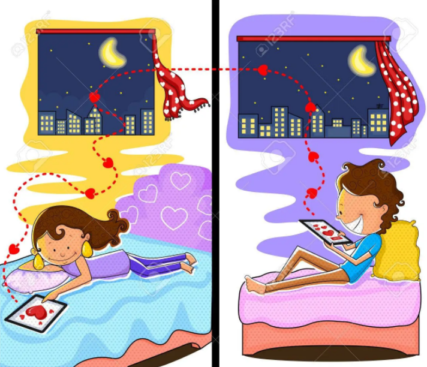

Here’re 10 tips on how to make a long distance relationship work:
1. Avoid excessive communication.
It is unwise to be overly “sticky” and possessive. You two don’t really have to communicate 12 hours a day to keep the relationship going. Many couples think that they need to compensate for the distance by doing more. This is not true. And it might only make things worse. Soon you would get tired of “loving.”
Remember: Less is more. It is not about spamming — you are only going to exhaust yourselves. It’s really about teasing at the right moments and tugging at the right spots.
2. See it as an opportunity.
View it as a learning journey for both of you. This is an opportunity for you to prove your love for one another. According to a Chinese proverb, “Real gold is not afraid of the test of fire.” Instead of thinking that this long-distance relationship is pulling you two apart, you should believe that through this experience, the both of you will be bound together even stronger.
As Emma says it to Will in season four of Glee,
3. Try to communicate regularly, and creatively.
Greet each other “good morning” and “good night” every day — this is a must. On top of that, try to update your partner on your life and its happenings, however mundane some of the things may seem.
To up the game, send each other pictures, audio clips, and short videos from time to time. By putting in this kind of effort, you make the other person feel loved and attended to.
4. Set some ground rules to manage your expectations.
Both of you need to be clear with what you expect of each other during this long-distance relationship. Set some ground rules so that none of you will do things that will take the other party by surprise.
For instance, are you two exclusive? Is it all right for the other person to go on dates? What is your commitment level? It’s better to be open with each other about all these things.

|
 | ||||

|

|
||||
5. Avoid “dangerous” situations.
If you already know that going to the club or going drinking with your group of friends late at night will displease your partner, then you should either 1. Not do it or 2. Tell your partner beforehand to reassure them.
You should not let this sort of thing slip by because it will only make your partner extra worried or suspicious – and of course, very upset because they will feel powerless or lack control over the situation.
6. Do similar things.
Recommend books, TV shows, movies, music, news and etc., to each other. When you read, watch and listen to the same things, you get to have more topics in common to talk about.
Even if you live apart, it’s nice to have some shared experiences.
7. Make visits to each other.
Every long-distance relationship is enriched by visits.
After all the waiting and yearning and abstinence, you finally get to meet each other to fulfil all the little things like kissing, holding hands, etc. These are typical for couples in long-distance relationships but more special and intimate for long-distance couples.
The atmosphere will be filled with fireworks, glitter bombs, confetti, rainbows, and butterflies.

8. Stay honest with each other.
Talk about your feelings of fear, insecurity, jealousy, apathy, whatsoever. If you try to hide anything from your partner, that secret will sooner or later swallow you up from the inside out. Don’t try to deal with things all by yourself. Be open and honest with each other. Let your partner help you and give you the support you need. It’s better to look at the problem during its initial stage than to only disclose it when it’s all too late.
9. Keep track of each other’s social media activities.
Facebook and Instagram photos of each other. Send each other tweets. Tag each other on Facebook. Post stuff on each other’s wall. Let them know you care. Be cool with stalking each other.
10. Gift a personal object for the other person to hold on to.
Memories have power. No matter what it is–a pendant, a ring, a keychain, a collection of songs and videos, or a perfume bottle. Everyday items and things have meanings to us, whether we realize it or not. We all try to store memories in material things so that when our minds fail, we will still be able to look at or hold onto something that will help us recall our memories. This is why something so simple can mean so much to a person when others may see little or no value in it.